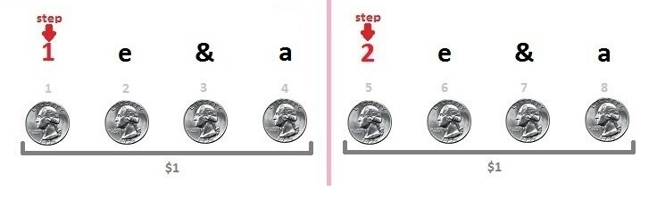

Samba Bounce
9 May 2016
Bounce is perhaps the most characteristic element of Samba. Maintaining a strong bounce action throughout your dancing can make you more rhythmical, and can generate power and dynamic changes that would otherwise be impossible. The principles of the Samba Bounce are extremely simple, but often get lost among the myriad other technical elements of this the most complex of the Latin dances. Sometimes, it is necessary to take a step back and reconsider the fundamental technique of the most basic principles to see a real change in more advanced figures. This post will serve to refresh what you probably learnt in your first few lessons of Samba.
How to Bounce
At its core, the Samba bounce is a slight flexing of the knees forward on the first half of the beat, and a slight straightening of the knees back on the second half of the beat. To demonstrate this, let's take each beat, and break it up into four counts. Whereas a normal bar of Samba music is counted 1 2, we are going to count 1234 5678 (musicians often count 1 e & a 2 e & a, but either way we are dividing two beats into eight pieces).
Now, stand with your feet together, and do as follows: on the first half of the first beat (counts 1 2), bend the knees forward; on the second half of the first beat (counts 3 4) straighten the knees back to a normal position. On the second beat, do the same thing: on the first half of the second beat (counts 5 6) bend the knees forward; on the second half of the second beat (counts 7 8) straighten the knees back to a normal position.
In other words, it should go like this:
| 1 | Commence to flex knees |
| 2 | Reach the full depth of the bounce |
| 3 | Commence to straighten knees |
| 4 | Complete straightening of the knees |
| 5 | Commence to flex knees |
| 6 | Reach the full depth of the bounce |
| 7 | Commence to straighten knees |
| 8 | Complete straightening of the knees |
Now, in one bar of music, which consists of two beats, which we have broken up into eight quarters, you should have completed two full bounces. For a more in depth article on counting Samba and its many rhythms, check out this article on Samba Timing.
Now that the timing is clear, let's work on the action. When you bounce, you shouldn't be changing height drastically. No, your head doesn't need to stay static like a belly dancer, but it shouldn't have the rise and fall of Waltz. The key here is to remember that when you bounce, you aren't bending the knees down, but forward. This will allow you to stay mostly level, but keep the bounce going through your body
The Purpose of the Bounce
Bounce actually serves a technical purpose in Samba, which can add power and dynamics to your dancing. As mentioned above, the Bounce has two parts: a slight flexing of the knees forward, and a slight straightening of the knees back. When coming from a step with a lot of power, the first half of the bounce absorbs that power. Without proper bounce, you would fall over on that step, or not be able to put as much power into it for fear of falling. The second half of the bounce acts to redirect that power that was absorbed into the next step. Without the bounce, it is difficult to move quickly and strongly.
You will notice when you have properly understood the correct technique of the Bounce, because you should feel that your dancing becomes easier, while it looks more powerful.
Dual Timings
Besides the Cruzados Walks and Locks, which are counted SSQQS, every single figure that has 3/4 1/4 1 timing (aka 1a2 timing) uses Samba Bounce. Let's use the Whisk to the Left as an example, and break that 3/4 1/4 1 timing up into eight counts, just like we did for the bounce. The steps should look like this:
| 1 | LF to side |
| 2 | don't move your feet |
| 3 | don't move your feet |
| 4 | Cross RF behind LF |
| 5 | Replace weight to LF |
| 6 | don't move your feet |
| 7 | don't move your feet |
| 8 | don't move your feet |
As you can see, the first step lasts three quarters of a beat, the second step lasts only a single quarter, and the third step lasts a whole four quarters of a beat. This is relatively simple when doing by itself, but now let's combine the steps with the bounce, and see what we get.
| 1 | LF to side, commence to flex L knee, R knee straight |
| 2 | Reach the full depth of the bounce in the L knee, R knee straight |
| 3 | Commence to straighten L knee, R knee straight |
| 4 | Complete straightening of the knees, and cross RF behind LF |
| 5 | Replace weight to LF, commence to flex knees |
| 6 | Reach the full depth of the bounce |
| 7 | Commence to straighten knees |
| 8 | Complete straightening of the knees, begin to reach RF to the side to follow with a Whisk to R |
Note that if the foot has to land on 1, it has to start moving before 1. For that reason, on 8, the foot begins to move toward the next step, and it will land on the next 1.
Combining the bounce with sharp foot placement can be tricky, but with a little bit of awareness it can make all the difference in your quality of dancing. Too often competitors try new fancy moves and exaggerated hips, but lack a fundamental understanding of core principles like bounce. This principle is universal in 1a2 timing in Samba - you'll find the same action in Bota Fogos and Voltas, as well. Spend a few minutes slowing down your legs and your thought process, and try to implement this in your dancing.
Don't Forget that Third Quarter
The most common error happens on the third quarter. If you look at the explanation above, on this quarter, the left leg should commence to straighten, but the right foot should not move yet. One of two things generally goes wrong here: 1) the right foot comes in too soon, resulting in sloppy timing of the feet; 2) there is no commencing to straighten the left knee, resulting in a jerking motion on the fourth quarter as the right foot is brought in.